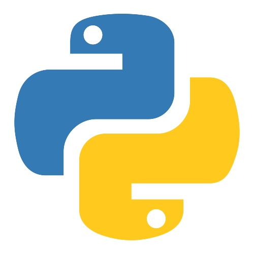
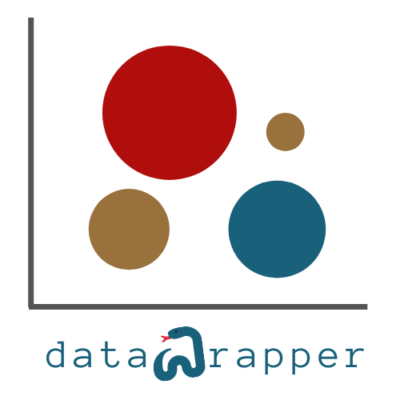

Nils Anderson
À propos de moi
Étudiant en troisième année de BUT Science des Données à Paris, j'ai toujours été fasciné par les données.
Ce qui m'amène à étudier la statistique, c'est d'abord une curiosité pour le monde autour de moi. J'ai toujours cherché à comprendre comment fonctionne mon environnement, les phénomènes, les causes à effets, et les relations entre les évènements.
Lorsque j'ai une question, généralement simple, comme comment modéliser la progression dans un jeu, je commence par aller chercher les données. Parfois, cela nécessite une solution créative. Passer par un script python, passer par un bot Discord, ou réaliser un sondage. Ensuite, je traite les erreurs, valeurs absurdes/aberrantes, et valeurs incomplètes. Enfin, je peux explorer mes données, les visualiser, et les modéliser.
Ces projets commencent avec quelques questions, et finissent toujours avec des réponses... mais aussi trois fois plus de questions. C'est comme ça que j'en apprends sur le monde, et parfois les lois de la nature.
En dehors des statistiques, je crée du contenu documentaire, ce qui est un processus tout aussi créatif, et qui m'apprend tout autant de choses.
Compétences
Outils pour le traitement de données
- Python (pandas, NumPy, matplotlib)
 RStudio (ggplot2, dplyr)
RStudio (ggplot2, dplyr)- SAS
 SQL
SQL Excel, Google Sheets, LibreOffice
Excel, Google Sheets, LibreOffice- RStudio
- Datawrapper
Compétences techniques
- Collecte de données (à partir de fichiers bruts, bases existantes, ou réalisation de sondages)
- Extraction de données (via bot Discord, une API, web scraping, ou transformation de fichiers JSON en CSV)
- Analyse de données, modélisation de tendances
- Présentation des données de manière claire (sous forme de datavisualisation, ou bien de vidéo explicative)
Langues
 Français (C2)
Français (C2)
Anglais (C2)
 Suédois (B1)
Suédois (B1)
 Espagnol (B1)
Espagnol (B1)
Qualités
Résolution de problèmes
Esprit d'analyse
Communication & storytelling grâce aux données
Vulgarisation, explication en termes simples